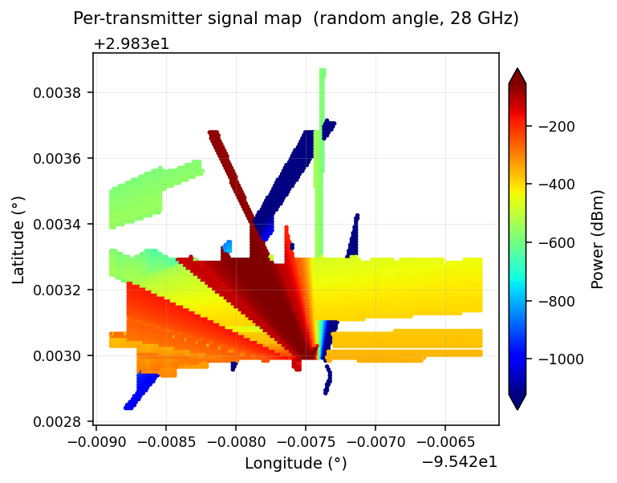
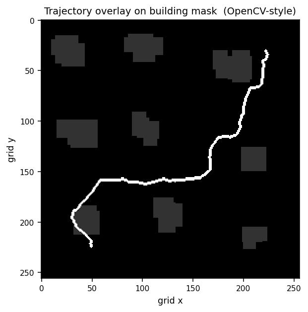
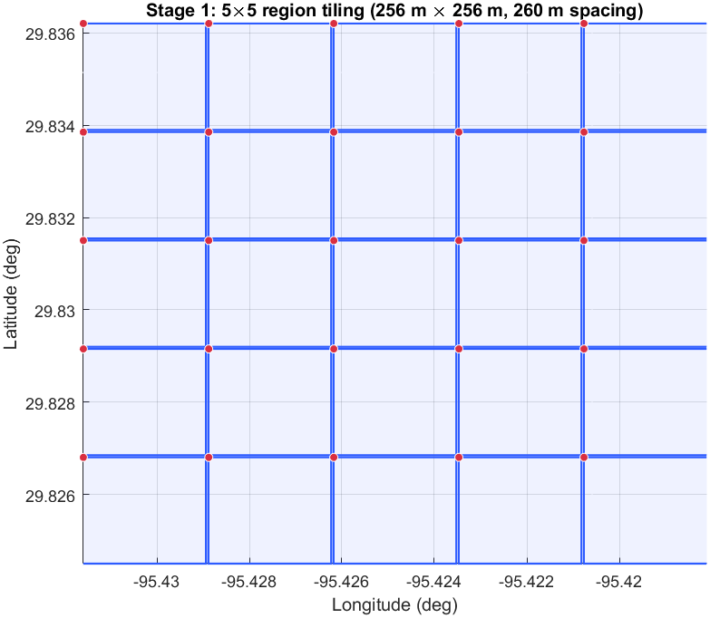
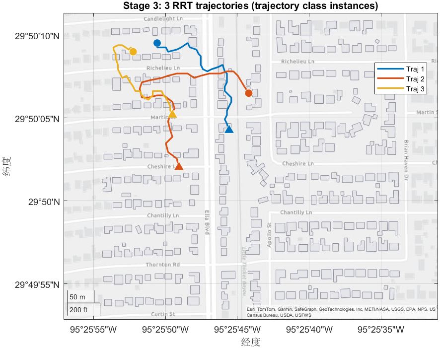
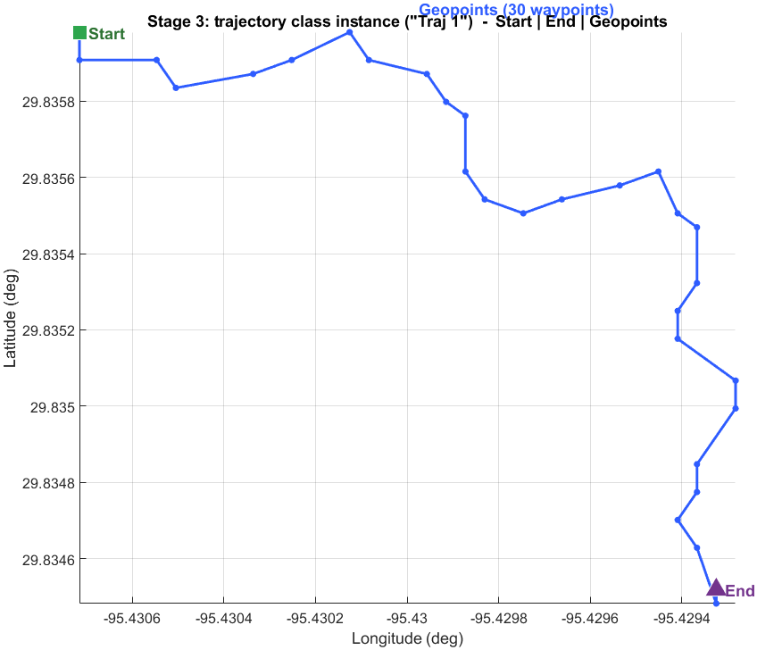
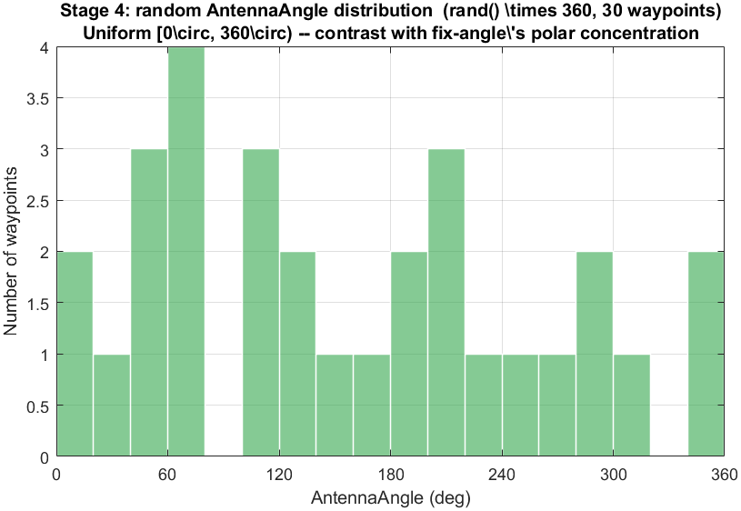
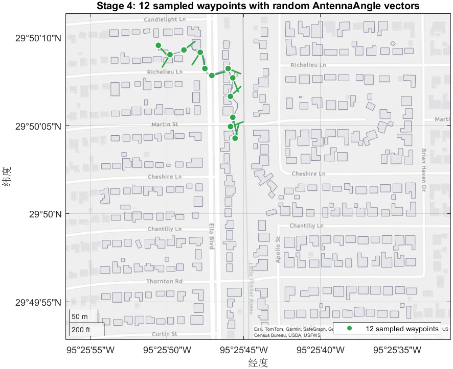
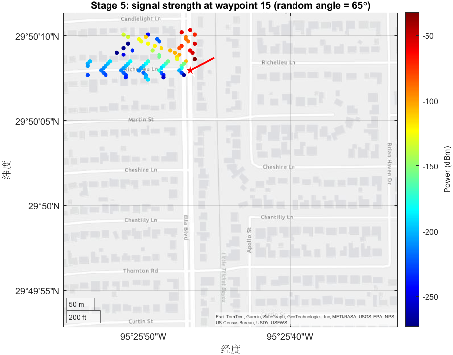
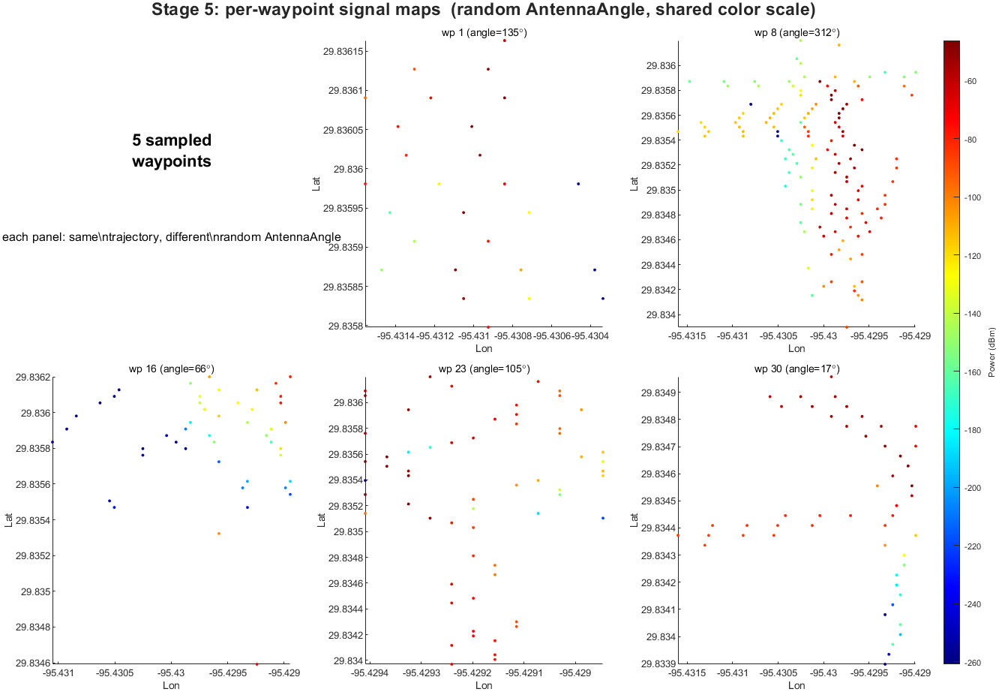

generateTrajectoryMaps
Random-angle counterpart of the fix-angle pipeline: generate RRT trajectories, simulate signal strength with random antenna orientations, and render per-trajectory PNG previews.
The generateTrajectoryMaps folder bundles three MATLAB scripts plus a small
trajectory helper class and a Python visualization tool. The flow is:
test1.m generates obstacle-aware RRT trajectories (no target / no fix angle),
trajectorySignalStrengthScript.m runs ray-traced
sigstrength with a random
AntennaAngle per waypoint, and
generateTrajectoryMaps.m rasterizes the resulting Excel signal maps into PNG
heatmaps.
Syntax
test1 exampletrajectorySignalStrengthScriptgenerateTrajectoryMapsregion_matches_trajectory_test exampleDescription
test1 tiles a 10×10 grid of 256 m × 256 m
regions starting at NW seed (29.83387, -95.4289), downloads OSM building
data per region, and plans num_trajectories RRT paths through each. Each
path is stored as a trajectory object (defined in
trajectory.m) containing Start, End, and 100
Geopoints; their lat/lon pairs are written to
trajectory_<i>.csv.
trajectorySignalStrengthScript consumes those CSVs. For every trajectory
it creates one txsite per waypoint with a random
AntennaAngle in [0, 360), attaches an 8×8 URA with a Gaussian element
([20°×10°] beamwidth), and writes per-waypoint
sigstrength tables to trajectory_maps_<i>/<tx>.xlsx.
generateTrajectoryMaps reads each Excel file and renders a 256×256 px
scatter heatmap of (Longitude, Latitude, Power) using
colormap jet, saving to mapPNGs/transmitter_<k>.png.
region_matches_trajectory_test is a sanity script that checks every
trajectory point lies inside the parent region's lat/lon set.
Examples
Run the Full Three-Script Pipeline
With generateTrajectoryMaps/ as the current folder, execute the three
scripts in sequence:
% Stage A: trajectory generation
test1 % writes dataset_1/, dataset_2/, ... dataset_100/
% Stage B: signal-strength simulation (random antenna angles)
trajectorySignalStrengthScript % writes dataset_*/SignalMapData/trajectory_maps_*/*.xlsx
% Stage C: PNG rendering
generateTrajectoryMaps % writes dataset*/SignalMapData/trajectory_maps_*/mapPNGs/*.png
jet colormap (warm = high power,
cool = low) reveals the antenna's radiation lobe and the shadows cast by nearby
buildings. Stage 5 saves one such PNG per waypoint into
mapPNGs/transmitter_<k>.png.
Validate Every Trajectory Stays Inside its Region
After Stage A, you can run the small region_matches_trajectory_test.m
script to verify all 100 waypoints of every trajectory belong to the parent region's
lat/lon set. This catches off-by-one errors in the
lon_range / lat_range mapping in Stage 3.
directory = 'dataset4/';
trajectory_count = 100;
region = readmatrix(strcat(directory, 'target_region.csv'));
for i = 1:trajectory_count
traj = readmatrix(strcat(directory, 'trajectory_', int2str(i), '.csv'));
if any(~ismember(traj(:,1), region(:,1))) || ...
any(~ismember(traj(:,2), region(:,2)))
disp("failed"); break;
end
end
disp("All Tests Successful");Expected output for a valid run:
Quick PNG Preview Using the Python Helper
trajectory_testing.py overlays each trajectory on top of the building
occupancy mask and shows the result with OpenCV. Useful for sanity-checking
trajectory shapes before launching the long Stage B run.
import pandas as pd
import numpy as np
import cv2
dataset_num = 1
target_region = pd.read_csv('dataset{}/target_region.csv'.format(dataset_num), header=None)
unique_lat = {v: i for i, v in enumerate(np.sort(np.unique(target_region[0])))}
unique_lon = {v: i for i, v in enumerate(np.sort(np.unique(target_region[1])))}
target_region_img = np.zeros((256, 256))
for k in range(target_region[0].shape[0]):
if target_region.iloc[k][2] != 0:
target_region_img[unique_lat[target_region.iloc[k][0]],
unique_lon[target_region.iloc[k][1]]] = 50
for i in range(100):
env = target_region_img.copy()
traj = pd.read_csv('dataset{}/trajectory_{}.csv'.format(dataset_num, i + 1), header=None)
for k in range(len(traj)):
lat, lon = traj.iloc[k]
env[unique_lat[lat], unique_lon[lon]] = 255
cv2.imshow('frame', env.astype(np.uint8))
cv2.waitKey(0)
trajectory_testing.py. Dark gray rectangles (value 50) are
building footprints obtained from target_region.csv; the white
polyline (value 255) is one trajectory overlaid on the same grid. Pressing
any key in the OpenCV window cycles to the next trajectory.
Algorithm
The pipeline runs five stages spread across three MATLAB scripts and one helper class. Click any stage to expand its description and code.
Stage 1 - Region grid & setup test1.m: NW seed, 10×10 region tiling
Tile a 10×10 grid of non-overlapping 256 m regions starting at
(29.83387, -95.4289). Each region is one
dataset_<env_num>/ output folder.
nw_lat = 29.83387;
nw_lon = -95.4289;
num_regions = 10;
num_trajectories = 50;
d = 260; % region spacing (m)
R = 6371 * 1000;
delta_lat = (d / R) * (180 / pi);
delta_lon = (d / (R * cosd(nw_lat))) * (180 / pi);
nw_lat_list(1) = nw_lat; nw_lon_list(1) = nw_lon;
for i = 2:num_regions
nw_lat_list(i) = nw_lat_list(i-1) - delta_lat;
nw_lon_list(i) = nw_lon_list(i-1) + delta_lon;
end
test1.m uses a 10×10 grid by default (100 datasets); the
illustration above shows a smaller 5×5 layout for clarity. Each blue tile
is one 256 m × 256 m region; the
k / l loops increment env_num across them
row-major.
Stage 2 - OSM download & building occupancy test1.m: readgeotable, isinterior
Identical to fix_angle_trajectory.m's Stage 2 except the OSM
download uses curl instead of wget, and the file path is
dataset_<n>/DatasetMapData.osm. The 256×256 binary
occupancy map and validStarts cell array are produced for the next
stage.
osmAPI = "https://api.openstreetmap.org/api/0.6/map?bbox=" + ...
num2str(west) + "," + num2str(south) + "," + ...
num2str(east) + "," + num2str(north);
system('curl "' + osmAPI + '" > ' + osmFile);
buildings = readgeotable(osmFile, layer="buildings");
for bldgIndex = 1 : height(buildings)
bldg = buildings(bldgIndex, 1);
points = geopointshape(lat_lon_table(:,1), lat_lon_table(:,2));
occupiedByBuilding(:,3) = occupiedByBuilding(:,3) + isinterior(bldg.Shape, points);
endStage 3 - RRT path planning & the trajectory class test1.m + trajectory.m: plannerRRT, isValidEnd, getPath
Path planning is identical to the fix-angle variant: plannerRRT with
MaxConnectionDistance = 1, validation via
validatorOccupancyMap on the inflated occupancy. Each path is wrapped
in a trajectory object whose
isValidEnd(x, y) rejects endpoints fewer than 100 cells away from
Start, and whose getPath() returns the
(lat, lon) table of Geopoints.
% Excerpt from trajectory.m
classdef trajectory
properties
Name
Start
End
Geopoints
end
methods
function is_Valid = isValidEnd(obj, x, y)
is_Valid = sqrt((x - obj.Start(1))^2 + (y - obj.Start(2))^2) >= 100;
end
function tbl = getPath(obj)
n = min(100, width(obj.Geopoints));
tbl = zeros(n, 2);
for i = 1:n
tbl(i,1) = obj.Geopoints(1, i).Latitude;
tbl(i,2) = obj.Geopoints(1, i).Longitude;
end
end
end
end
% In test1.m: drive the planner, build trajectory objects
planner = plannerRRT(state_space, state_validator, "MaxIterations", 2e4);
[pthObj, ~] = planner.plan(start, goal);
traj = trajectory();
traj.Start = randStart;
traj.End = randEnd;
traj.Geopoints = geopointshape(shortenedPathLats, shortenedPathLons);fix_angle_trajectory.m, this pipeline
does not compute target coordinates or per-waypoint bearings.
AntennaAngle is randomized in Stage 4 instead.

trajectory objects produced by the actual demo run
of plannerRRT over the OSM-derived occupancy mask. Circles mark
Start, triangles mark End; getPath()
returns the (lat, lon) table that gets written to
trajectory_<i>.csv.

trajectory class instance. The class stores
Name, Start (grid cell), End (grid
cell), and Geopoints (the lat/lon array). getPath()
flattens Geopoints into the N×2 table used by
downstream signal-strength code.
Stage 4 - Random-angle signal-strength simulation trajectorySignalStrengthScript.m: rxsite, sigstrength, writetable
For each trajectory: build one txsite per waypoint, attach an
8×8 URA with a Gaussian element ([20°×10°] beamwidth), and set
AntennaAngle = rand() * 360. Receivers are loaded from
target_region.csv (rows tagged as inside-building are removed). The
propagation model is ray-tracing SBR with one reflection.
transmitterFreq = 28e9;
transmitterPower = 1;
antennaHeight = 2;
tx = txsite("Name", "Tx"+(1:totalMaps), ...
"Latitude", selected_latitudes, ...
"Longitude", selected_longitudes, ...
"TransmitterFrequency", transmitterFreq, ...
"TransmitterPower", transmitterPower, ...
"AntennaHeight", antennaHeight);
for tx_num = 1:totalMaps
array = phased.URA('Size', [8 8], 'Lattice', 'Rectangular', 'ArrayNormal', 'x');
elem = phased.GaussianAntennaElement;
elem.FrequencyRange = [0 tx(tx_num).TransmitterFrequency];
elem.Beamwidth = [20 10];
array.Element = elem;
tx(tx_num).Antenna = array;
tx(tx_num).AntennaAngle = rand() * 360; % <— random orientation
end
rx = rxsite("Latitude", region(:,1), "Longitude", region(:,2), ...
"ReceiverSensitivity", -100, "AntennaHeight", 2);
pm = propagationModel("raytracing", "Method", "sbr", ...
"MaxNumReflections", 1, "MaxNumDiffractions", 0);
for tx_num = 1:totalMaps
sigStre = sigstrength(rx, tx(tx_num), pm);
T = table(region(:,1), region(:,2), sigStre', ...
'VariableNames', {'Latitude', 'Longitude', 'Power'});
writetable(T, fullfile(trajectory_maps_dir, string(tx_num) + '.xlsx'));
end
AntennaAngle values drawn from
rand() * 360, one per waypoint of the demo trajectory. The
roughly flat histogram contrasts with the sharply concentrated polar histogram
of the fix_angle_trajectory pipeline — same RRT machinery,
but uniform random orientations instead of target-tracking bearings.

rand() * 360 antenna direction. The arrows fan out
chaotically — the random-angle visual signature.
Stage 5 - PNG visualization of signal maps generateTrajectoryMaps.m: scatter, colormap jet, print
For each Excel signal map produced by Stage 4, render a 256×256 px
scatter heatmap of (Longitude, Latitude, Power) with the
jet colormap and a colorbar. Output is saved to
mapPNGs/transmitter_<k>.png.
data = readtable(data_dir + trajectory_dir + "/" + num2str(k) + ".xlsx");
myFigure = figure;
desiredWidth = 256; desiredHeight = 256;
aspectRatio = desiredWidth / desiredHeight;
figPosition = get(myFigure, 'Position');
figPosition(3) = aspectRatio * figPosition(4);
set(myFigure, 'Position', figPosition);
scatter(data.Longitude, data.Latitude, [], data.Power, 'filled');
colormap jet; colorbar;
set(myFigure, 'PaperPositionMode', 'auto');
outputFileName = map_dir + "/transmitter_" + num2str(k) + ".png";
print(myFigure, outputFileName, '-dpng', '-r0'); % screen-resolution exportnum_maps commented out
on line 18; uncomment num_maps = height(trajectory_i); before
running, otherwise the inner loop is undefined.

sigstrength output for one demo waypoint, with the
random AntennaAngle drawn as a short red line. The asymmetric
radiation pattern — strong on the antenna's pointing side, weak behind
— matches the URA's directional beam.

AntennaAngle drawn from the random distribution above; the lobe
shape rotates per waypoint. Stage 5 runs the same scatter +
jet render and saves each to
mapPNGs/transmitter_<k>.png.
Input Files
test1.m, trajectorySignalStrengthScript.m,
generateTrajectoryMaps.m
scripts, edit-in-place parameters
nw_lat, nw_lon, num_regions,
num_trajectories, num_datasets) before running. There are
no command-line arguments.
trajectory.m
required class, same folder
trajectory class with properties Name,
Start, End, Geopoints and methods
isValidEnd, getPath, syncCordinates. Used by
test1.m in Stage 3 and re-used by the GUI in
../app.m.
trajectory_testing.py
optional Python helper
region_matches_trajectory_test.m
optional sanity check
trajectoryMap.osm
cached map data
../app.m) reuses to skip the
per-region download in Stage 2 during quick demos. Not consumed by the three
pipeline scripts directly.
Internet access — OSM API required per region
api.openstreetmap.org
via curl on the system PATH.
Output Files
Per region, written to dataset_<env_num>/ (note the underscore):
DatasetMapData.osm— cached OSM building extract.target_region.csv—(256²)×3: latitude, longitude, building-occupancy flag.trajectory_<i>.csv— 100 waypoint(lat, lon)pairs.
Per trajectory, written by Stage 4 to
dataset_<n>/SignalMapData/trajectory_maps_<i>/:
1.xlsx ... 100.xlsx— per-waypoint receiver-power tables.
Per trajectory, written by Stage 5 to the same folder:
mapPNGs/transmitter_<k>.png— 256×256 px scatter heatmaps.
Dependencies
- MATLAB R2023b or later
- Antenna Toolbox —
txsite,rxsite,sigstrength,siteviewer - Phased Array System Toolbox —
phased.URA,phased.GaussianAntennaElement - Navigation Toolbox —
plannerRRT,stateSpaceSE2,binaryOccupancyMap - Mapping Toolbox —
readgeotable,isinterior - Communications Toolbox —
propagationModel curlon the system PATH- For the optional Python helper: Python 3 with
pandas,numpy,opencv-python
Tips
dataset_<n> with an
underscore here, but dataset<n> without one in the
fix angle simulation/ folder. Don't mix outputs from the two pipelines in
the same parent directory.
generateTrajectoryMaps.m ships with
num_maps = height(trajectory_i) commented out (line 18). Uncomment it
before running, otherwise the inner for k = 1:num_maps loop is undefined.
num_regions = 10, num_trajectories = 50) produce 100 datasets
× 50 trajectories × 100 waypoints × ray tracing — very long
runtime. Start with num_regions = 1, num_trajectories = 2 for
smoke testing.
../fix angle simulation/fix_angle_trajectory.m and
generate_fix_angle.m — same RRT logic but with target-bearing
antennas.
See Also
Functions
txsite
rxsite
sigstrength
propagationModel
siteviewer
phased.URA
phased.GaussianAntennaElement
plannerRRT
binaryOccupancyMap
readgeotable
isinterior
scatter
colormap
print
Related Scripts in this Repository
../fix angle simulation/fix_angle_trajectory.m— fixed-angle (target-tracking) counterpart oftest1.m../fix angle simulation/generate_fix_angle.m— fixed-angle counterpart oftrajectorySignalStrengthScript.m../static transimiter simulation/static_trans.m— static (non-trajectory) signal-map generator../app.m(Synthetic Trajectory Generator tab) — interactive GUI built on the sametrajectoryclass